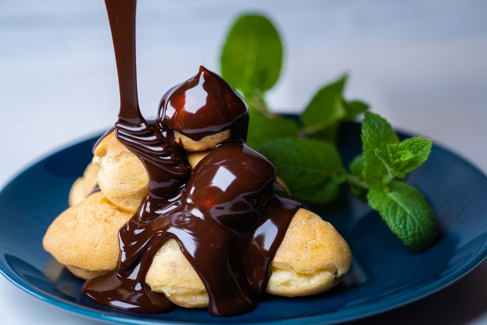
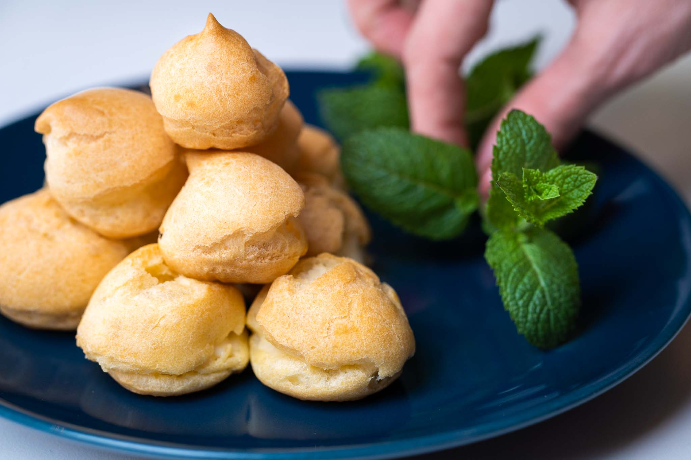
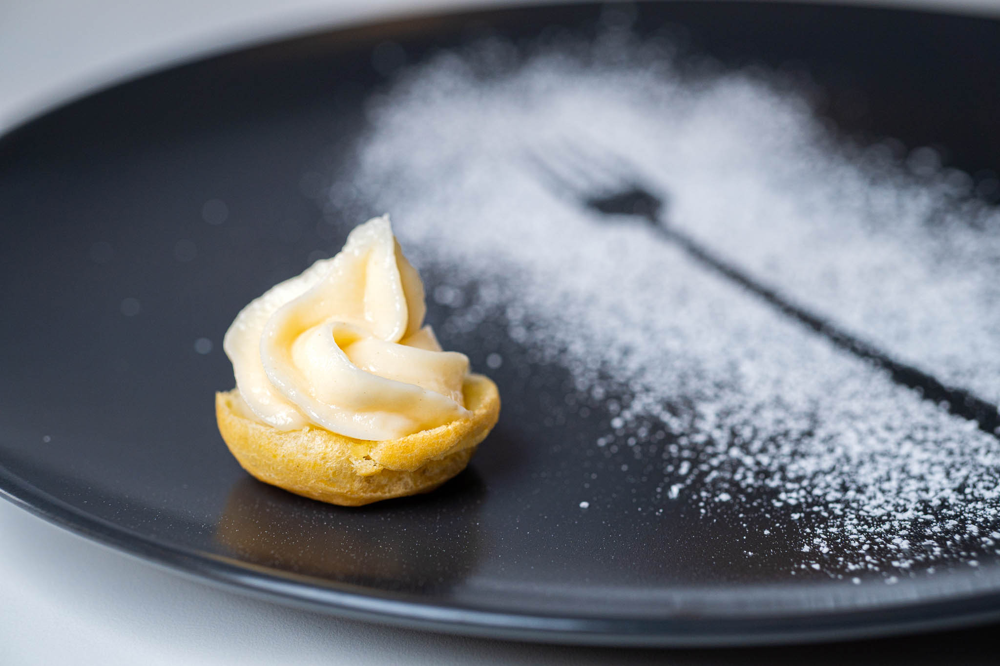
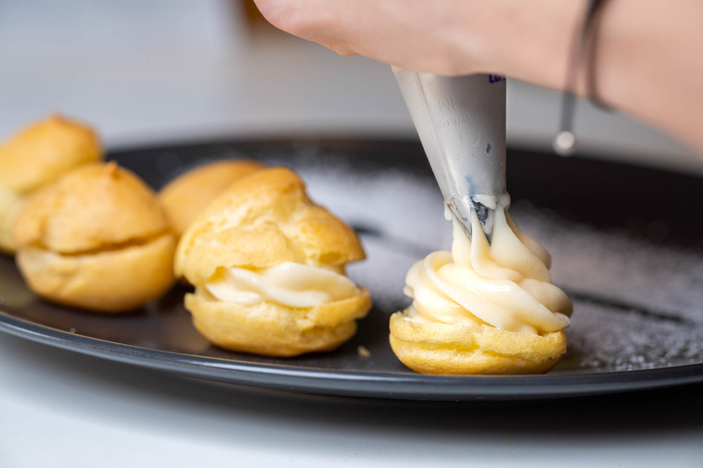
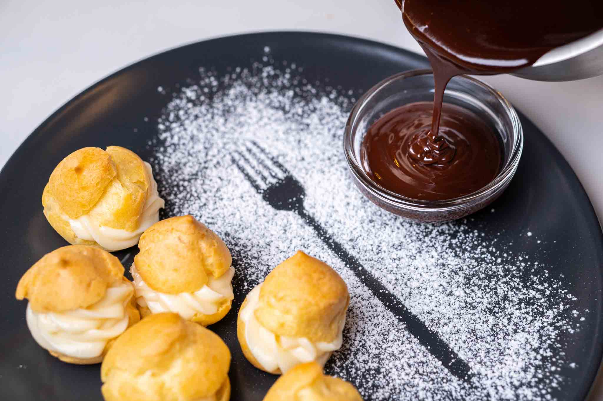

Еклери

Съставки
- 250 мл вода
- 100 г масло
- 150 г брашно
- 4 яйца
- Крем за пълнене по избор
Начин на приготвяне
1

В тенджера загрейте вода и маслото.
2

Добавете брашното и бъркайте до получаване на хомогенна смес.
3

След като сместа изстине леко, добавете яйцата едно по едно.
4

С помощта на пош оформете еклерите и печете на предварително загрята фурна.
5

Времето за печене е 30 минути или докато станат златисти.